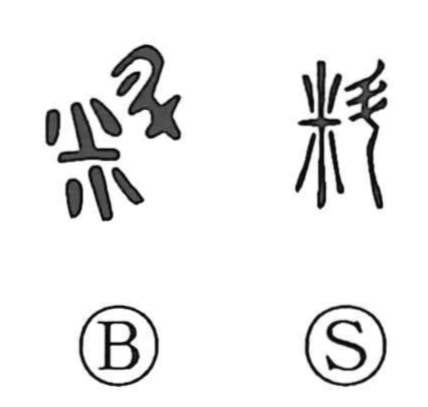

料

Kun: | On: ryo
to measure ・ materials ・ fee ・ food
Explanation
料 combines 米, grain, with 斗, a handled measure. It pictures the grain within the scoop as its quantity is determined. The concrete action is measuring out a portion.
From measuring come counting, comparing, selecting, and considering. Assessment applies the same operation more widely: an amount or condition is examined before a decision is made.
The measured portion also gives what is set aside for a purpose: provisions, materials, an allowance, or the resources needed to do something. 料理 concerns putting things in order for use, while 資料 supplies material for examination. The action of measuring and the material made available remain joined in the word's range.